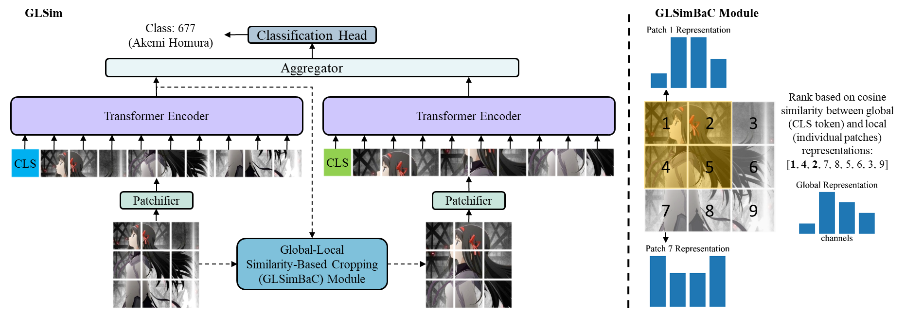
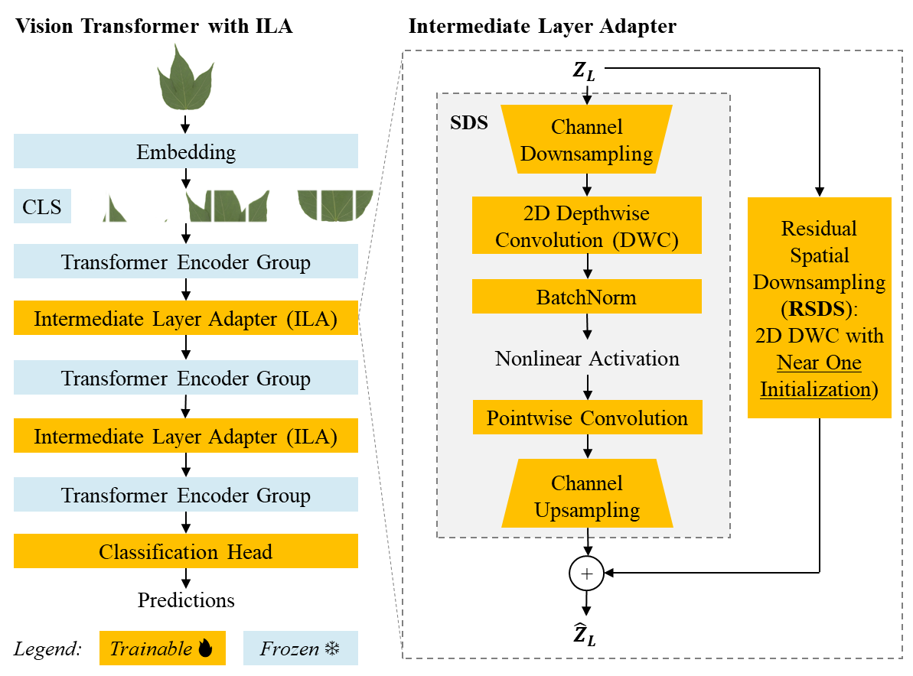
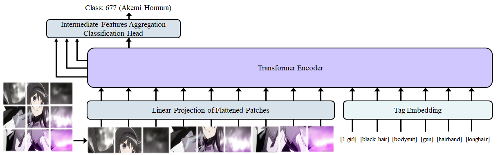
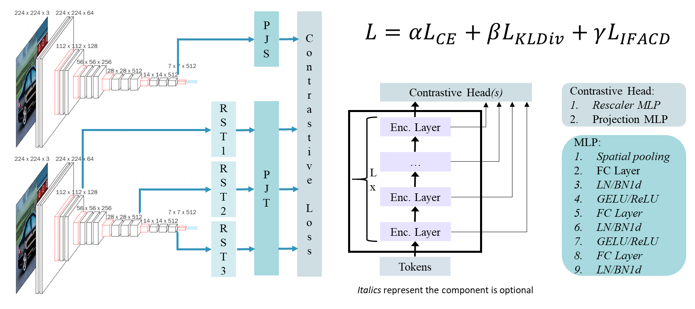
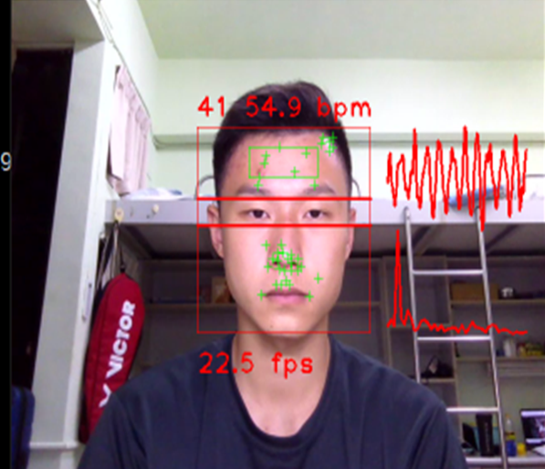
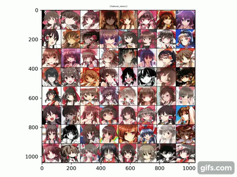
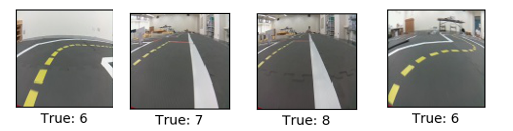

|
Edwin Arkel Rios
PhD Student in EECSNational Yang Ming Chiao Tung University Hsinchu, Taiwan edwinarkel.rios@gmail.com [GitHub] [Resume] |
My name's Edwin and I come from Panama. I received the B.S. degree in
Energy Engineering from National Cheng Kung University (NCKU), Tainan,
Taiwan, in 2019. I enrolled National Yang Ming Chiao Tung University
(NYCU) to pursue a M.S. and then a Ph.D. degree in Electrical
Engineering and Computer Science (EECS), in 2019 and 2021,
respectively, where I have been co-supervised by Professor Bo-Cheng
Lai (賴伯承) and Professor Min-Chun Hu (胡敏君).
My research is focused on the design of efficient deep learning models.
In particular, I have done work on time-series for heart-rate
monitoring, model compression using knowledge distillation and
self-supervised learning, and efficient fine-grained image recognition
systems incorporating parameter-efficient transfer learning,
token pruning for vision transformers, and efficient discriminative
feature selection mechanisms.
|  |
Cross-Layer Cache Aggregation for Token Reduction in
Ultra-Fine-Grained Image Recognition. ICASSP 25 Plug-and-play modules to avoid information loss when applying token pruning methods for datasets with small inter-class differences. Thorough experiments across diverse datasets, backbones, token reduction methods, image sizes, and keep rates show our method enables significant cost savings while maintaining high accuracy. [Source code] [Paper] |
|  |
Down-Sampling Inter-Layer Adapter for Parameter and
Computation Efficient Ultra-Fine-Grained
Image Recognition. ECCV EFM Workshop 24 Addresses attention collapse under wide domain gap adaptation settings by proposing down-sampling adapter module. Similar accuracy but 123x less trainable parameters compared to SotA. [Source code] [Paper] |
|
Global-Local Similarity for Efficient Fine-Grained
Image Recognition with Vision Transformers. ISCAS 25 Similarity between global and local representation as criteria for discriminative region selection criteria in FGIR. Thorough experiments across 10 FGIR datasets covering variety of settings including image size and AugReg combinations. Our proposed model obtains best accuracy on 8 / 10 at much less cost than best on others. [Source code] [Paper (arXiv)] |
|
|  |
Anime Character Recognition using Intermediate Features
Aggregation. ISCAS 2022 Intermediate features aggregation classification head for reducing sensitivity to hyperparameters in ViTs at low computational cost. Experiments on how model architecture and hyperparameter affect classification performance. [Source code] [Paper] |
|  |
IFACD: Intermediate Features Augmented Contrastive
Distillation. ICLR CSS Workshop 2022 Extend contrastive learning framework (in particular SimCLR-like) to support features from intermediate layers of a particular image as additional positive pairs and intermediate features from other images in batch as negative pairs, reducing reliance on augmentations pairs and large batch size requirements. Apply proposed contrastive loss in a knowledge distillation framework where intermediate features are extracted using a frozen teacher and student learns using a combined contrastive, distillation, and supervised cross-entropy loss. Experiments with a variety of teacher-student combinations show our method obtains favorable accuracy at a competitive computational cost compared to alternatives. [Source Code] [Recorded Presentation (Starts at 2:47:50)] [Slides] |
|  |
DLPrPPG: Development and Design of Deep Learning Platform
for Remote Photoplethysmography. ISCAS 2022 Parametric Study of Performance of Remote Photopletysmography System. ISCAS 2021 Systematic studies of remote photoplethysmography (RPPG) design hyperparameters (face detection method, region of interest selection scheme, sliding window size, preprocessing and postprocessing algorithm choice) and their effects on heart rate prediction accuracy in relation to computational cost using C++, Python and OpenCV. [Paper ISCAS 2022] [Paper ISCAS 2021] |
|  |
Vision Transformers for Anime Character Face Recognition Image classification of anime character faces using state-of-the-art for image recognition: vision transformers. Revamped a dataset for this task, DAF:re: almost 500 K images and more than 3 K classes. Conducted experiments on both CNN and self-attention based models, and explored for the first-time the hyperparameter tuning (mini-batch and image size) of vision transformers for out-of-domain data. [Source code] [Paper on DAF:re] |
|
DeblurGAN for Deblurring of Videos Done in Python, using OpenCV and PyTorch. Final project for Digital Image Processing course (108-1). Also included slides for midterm presentation covering DeblurGANv2 paper. [Final Project Poster] [DeblurGANv2 Paper Slides] |
|
|  |
Computer Vision for Autonomous Driving Done in Python, making use of TensorFlow, Keras, OpenCV, and ROS. Final project for Deep Learning course (108-1). Also included slides for midterm presentation covering VGG network paper. [VGG Paper Slides] [Final Project Slides] |